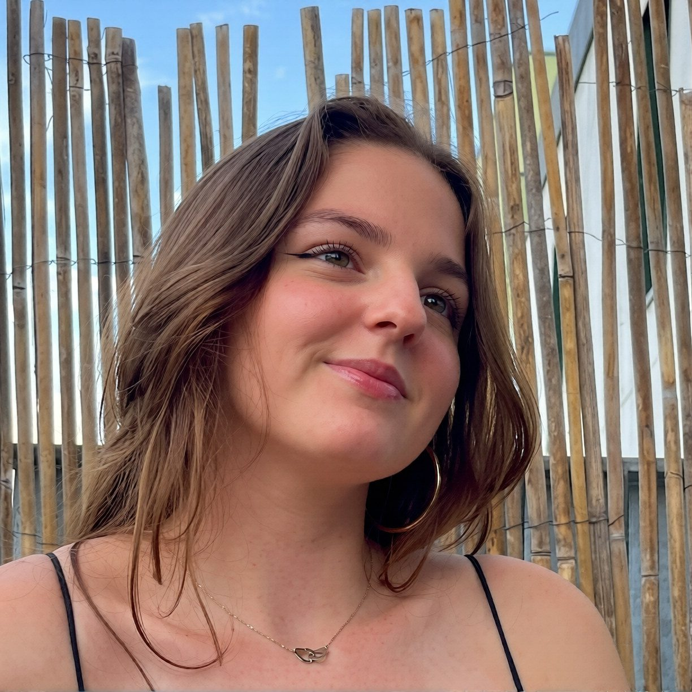
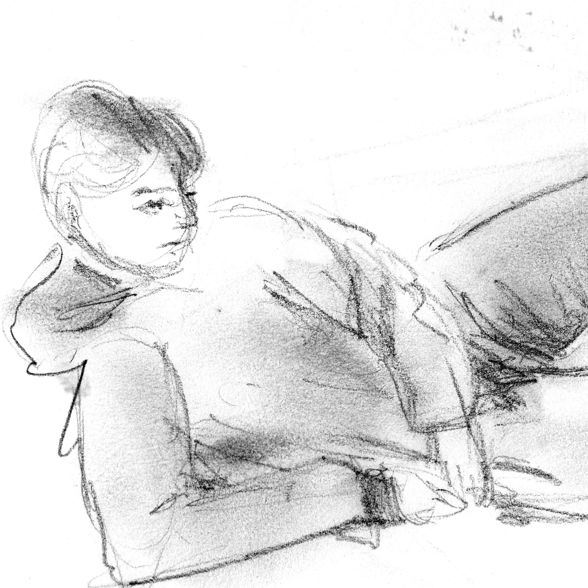
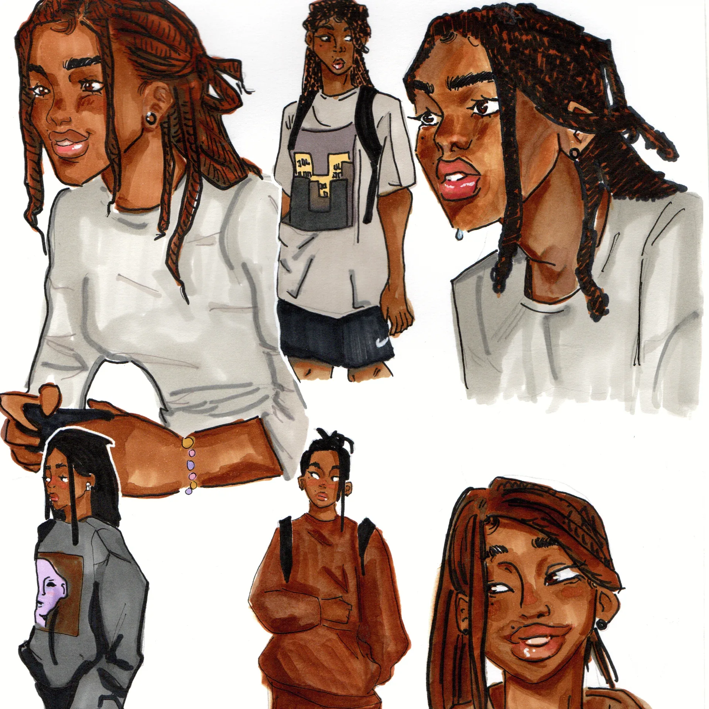

Expérimentation de vol
Prototype sur Unity visant à rendre le vol agréable à jouer.

Game designer et artiste, spécialisée en narration, level design et direction visuelle
Voir les projetsJe m’appelle Clara Cahours de Virgile, j’ai 20 ans et je suis actuellement en troisième année de bachelor Jeu Vidéo à LISAA. Après un bac STD2A obtenu en 2021, je me suis orientée vers le game design, attirée par sa polyvalence dans la production de jeu. Aujourd’hui, je souhaite consolider et approfondir mes compétences graphiques et en 3D. Je suis actuellement à la recherche d’un stage pour m’inscrire durablement dans l’industrie du jeu vidéo et de l’animation 3D.
Un résumé chronologique des étapes de formation et des projets marquants, avant de détailler chaque travail plus bas.
2021
Obtention du baccalauréat Sciences et Technologies du Design et des Arts Appliqués.
2022
Orientation vers le game design pour sa polyvalence dans la production de jeu.
2023
Projet de fin de première année : niveau de plateforme en équipe de 3.
2024
Projet interfilière de deuxième année : rail shooter en équipe de 11.
2024
Prototype de jeu de plateau MOBA en équipe de 5, en 1 mois et demi.
2025
Projet de troisième année : jeu narratif et d’énigmes en équipe de 9.
Sept projets menés en formation, du prototype de jeu de plateau au jeu vidéo narratif complet.
Quelques prototypes courts réalisés pour expérimenter des mécaniques ou des outils spécifiques.
Prototype sur Unity visant à rendre le vol agréable à jouer.
Level design vivant conçu uniquement à partir de splines sur Unity.
Devoirs notés réalisés en parallèle des projets : analyse de jeu, étude de cas, scénario et bible d’univers.
Créer des personnages est une passion. Imaginer leur histoire, leur personnalité, leurs motivations et leurs failles avant même de les incarner, puis leur donner vie en sessions de jeu de rôle, sur Red Dead Redemption 2 (RedM) ou GTA V (FiveM).
Illustrations, études d’observation et expérimentations graphiques réalisées en parallèle des projets de jeu.






Production 3D sur 3DS Max. Intégré dans Unreal Engine.
L’environnement interagit avec la force du vent.
À la recherche d’un stage en game design, direction artistique ou animation 3D.
claracahours@hotmail.fr